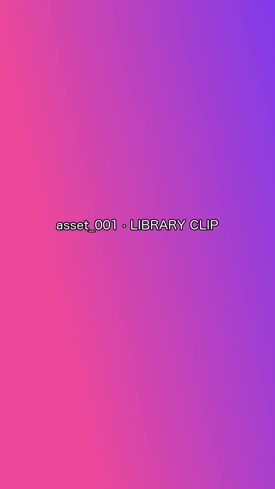
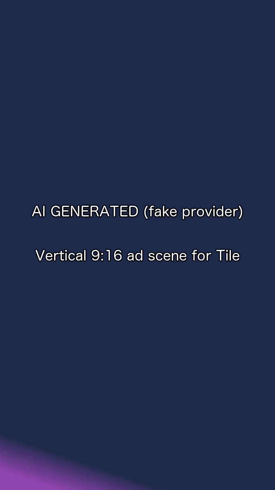

TILE BLITZ 狂欢式连击
ADPILOT 广告提案 · 巴西市场 · TIKTOK 竖屏 · 15 秒 · 三幕叙事
CUT · 成片交付
CUT 01
已通过 · 交付SCENE · 素材库01

82分 · 通过钩子 · 碎片小憩
SCENE · AI 生成 · 第 2 版02

88分 · 修复后证明 · 连击狂欢
SCENE · 素材库03
 82分 · 通过
82分 · 通过号召 · 立即下载
ADPILOT 广告提案 · 巴西市场 · TIKTOK 竖屏 · 15 秒 · 三幕叙事
CUT · 成片交付
CUT 01
已通过 · 交付SCENE · 素材库01

82分 · 通过SCENE · AI 生成 · 第 2 版02

88分 · 修复后SCENE · 素材库03
82分 · 通过PRODUCTION LOG · 场记
智能体的每一步判断都有场记：何时决策、何时转 AI 生成、何时只重做不合格的那一幕——全程留档，随时回看。
SCENE 02 · ACTION
定调三幕叙事：钩子 → 证明 → 行动号召对应 TikTok 前 3 秒留人、中段可信、结尾转化
S1、S3 命中素材库高分切片匹配度 0.91 / 0.88 · 零生成成本，直接可用
S2 检索为空 → 智能体自己决定：转 AI 生成候选片段均未呈现「连击爽感」核心画面
机器的判断 · 可解释S2 视频生成第 1 版完成 · 6 秒竖屏 9:16 · 提示词强调下载按钮特写
首版评审 64 分 · 不合格 → 只重做 S2CTA 下载按钮特写缺失 · S1/S3 不受牵连
失败隔离 · 单场景修复配音混音完成 · 成片交付中文普通话 · 含 BGM · 15 秒竖屏
SELF-REPAIR · 自修复时刻
多模态评审逐帧质检，只重做不合格的那一个场景——
S1、S3 已通过的镜头一帧不动，不重复花钱、不重复等待。
LIGHTS DOWN · 请入座 · 成片即将开始
PREMIERE · 首映
三幕走完，成片在此首映：钩子留人、证明可信、号召转化——每一幕都经过质检，88 分交付。
制作轨迹 —— 3 场景 · 2 次画面生成 · 1 次自修复（S2 64 → 88，仅重做不合格场景）